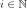
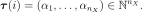
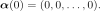
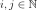
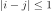
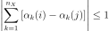
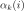
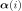
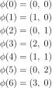
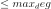

EnumerateFunction¶
- class EnumerateFunction(*args)¶
Enumerate function.
Notes
EnumerateFunction represents a bijection
 from
from  to
to
 . This bijection is based on a particular enumeration rule
of the set of multi-indices.
. This bijection is based on a particular enumeration rule
of the set of multi-indices.For every integer

, we associate a multi-index
The first multi-index is

Let

be any pair of indices. If
then
where

represents the k-th component of the multi-index
.This provides a necessary but insufficient condition for the construction of the bijection: a supplementary hypothesis must be made.
For example, consider the dimension . The following mapping is an enumerate function:

For the functional expansion (respectively polynomial chaos expansion), the multi-index
 represents the collection of degrees of the
selected orthogonal functions (respectively orthogonal polynomials).
More precisely, after the selection of the type of orthogonal functions (respectively
orthogonal polynomials) for the construction of the orthogonal basis, the
EnumerateFunction characterizes the term of the basis by providing the
degrees of the univariate functions (respectively univariate polynomials).
represents the collection of degrees of the
selected orthogonal functions (respectively orthogonal polynomials).
More precisely, after the selection of the type of orthogonal functions (respectively
orthogonal polynomials) for the construction of the orthogonal basis, the
EnumerateFunction characterizes the term of the basis by providing the
degrees of the univariate functions (respectively univariate polynomials).The total degree of the
 polynomial of the
multivariate basis is equal to the sum of all the integers given in the list.
polynomial of the
multivariate basis is equal to the sum of all the integers given in the list.Examples
>>> import openturns as ot >>> dim = 2 >>> enum_func = ot.LinearEnumerateFunction(dim) >>> for i in range(6): ... print(enum_func(i)) [0,0] [1,0] [0,1] [2,0] [1,1] [0,2]
Methods
__call__(index)Call self as a function.
getBasisSizeFromTotalDegree(maximumDegree)Get the basis size corresponding to a total degree.
Accessor to the object's name.
Return the dimension of the EnumerateFunction.
getId()Accessor to the object's id.
Accessor to the underlying implementation.
getMaximumDegreeCardinal(maximumDegree)Get the number of terms of total degree below a threshold.
getMaximumDegreeStrataIndex(maximumDegree)Get the largest index of the strata containing terms of maximum degree.
getName()Accessor to the object's name.
getStrataCardinal(strataIndex)Get the number of terms in the basis inside a given strata.
getStrataCumulatedCardinal(strataIndex)Get the number of terms in the basis inside a range of stratas.
inverse(indices)Get the antecedent of a indices list in the EnumerateFunction.
setDimension(dimension)Set the dimension of the EnumerateFunction.
setName(name)Accessor to the object's name.
- __init__(*args)¶
- getBasisSizeFromTotalDegree(maximumDegree)¶
Get the basis size corresponding to a total degree.
- Parameters:
- max_degint
Maximum total degree.
- Returns:
- sizeint
Number of terms in the basis of total degree

.
Notes
In the specific context of a linear enumeration (
LinearEnumerateFunction) this is also the cumulated cardinal of stratas up to max_deg.Examples
>>> import openturns as ot >>> dim = 2 >>> enum_func = ot.LinearEnumerateFunction(dim) >>> enum_func.getBasisSizeFromTotalDegree(3) 10 >>> enum_func.getStrataCumulatedCardinal(3) 10
- getClassName()¶
Accessor to the object’s name.
- Returns:
- class_namestr
The object class name (object.__class__.__name__).
- getDimension()¶
Return the dimension of the EnumerateFunction.
- Returns:
- dimint,

Dimension of the EnumerateFunction.
- dimint,
- getId()¶
Accessor to the object’s id.
- Returns:
- idint
Internal unique identifier.
- getImplementation()¶
Accessor to the underlying implementation.
- Returns:
- implImplementation
A copy of the underlying implementation object.
- getMaximumDegreeCardinal(maximumDegree)¶
Get the number of terms of total degree below a threshold.
- Parameters:
- max_degint
Maximum total degree.
- Returns:
- cardinalint
Number of terms in the basis of total degree .
Notes
In the specific context of a linear enumeration (
LinearEnumerateFunction) this is also the cumulated cardinal of stratas of index .Examples
>>> import openturns as ot >>> dim = 2 >>> enum_func = ot.LinearEnumerateFunction(dim) >>> enum_func.getMaximumDegreeCardinal(2) 6
- getMaximumDegreeStrataIndex(maximumDegree)¶
Get the largest index of the strata containing terms of maximum degree.
- Parameters:
- max_degint
Maximum total degree.
- Returns:
- indexint
Index of the last strata that contains terms of total degree .
Notes
In the specific context of a linear enumeration (
LinearEnumerateFunction) this is the strata of index max_deg.Examples
>>> import openturns as ot >>> dim = 2 >>> enum_func = ot.LinearEnumerateFunction(dim) >>> enum_func.getMaximumDegreeStrataIndex(2) 2
- getName()¶
Accessor to the object’s name.
- Returns:
- namestr
The name of the object.
- getStrataCardinal(strataIndex)¶
Get the number of terms in the basis inside a given strata.
- Parameters:
- strataIndexint
Index of the strata of the tensorized basis.
- Returns:
- cardinalint
Number of terms in the basis inside the strata strataIndex.
Notes
In the specific context of a linear enumeration (
LinearEnumerateFunction) the strata strataIndex consists of a hyperplane of all the terms of total degree strataIndex, and its cardinal is strataIndex + 1.Examples
>>> import openturns as ot >>> dim = 2 >>> enum_func = ot.LinearEnumerateFunction(dim) >>> enum_func.getStrataCardinal(2) 3
- getStrataCumulatedCardinal(strataIndex)¶
Get the number of terms in the basis inside a range of stratas.
- Parameters:
- strataIndexint
Index of the strata of the tensorized basis.
- Returns:
- cardinalint
Number of terms in the basis inside the stratas of index lower of equal to strataIndex.
Notes
The number of terms is the total of terms inside each consecutive stratas. In the specific context of a linear enumeration (
LinearEnumerateFunction) this returns the number of terms of maximal total degree strataIndex.Examples
>>> import openturns as ot >>> dim = 2 >>> enum_func = ot.LinearEnumerateFunction(dim) >>> enum_func.getStrataCumulatedCardinal(2) 6 >>> sum([enum_func.getStrataCardinal(i) for i in range(3)]) 6
- inverse(indices)¶
Get the antecedent of a indices list in the EnumerateFunction.
- Parameters:
- multiIndexsequence of int
List of indices.
- Returns:
- antecedentint
Represents the antecedent of the multiIndex in the EnumerateFunction.
Examples
>>> import openturns as ot >>> dim = 2 >>> enum_func = ot.LinearEnumerateFunction(dim) >>> for i in range(6): ... print(str(i)+' '+str(enum_func(i))) 0 [0,0] 1 [1,0] 2 [0,1] 3 [2,0] 4 [1,1] 5 [0,2] >>> print(enum_func.inverse([1,1])) 4
- setDimension(dimension)¶
Set the dimension of the EnumerateFunction.
- Parameters:
- dimint,
Dimension of the EnumerateFunction.
- dimint,
- setName(name)¶
Accessor to the object’s name.
- Parameters:
- namestr
The name of the object.
Examples using the class¶


Create a polynomial chaos metamodel by integration on the cantilever beam

Create a polynomial chaos for the Ishigami function: a quick start guide to polynomial chaos


Example of sensitivity analyses on the wing weight model